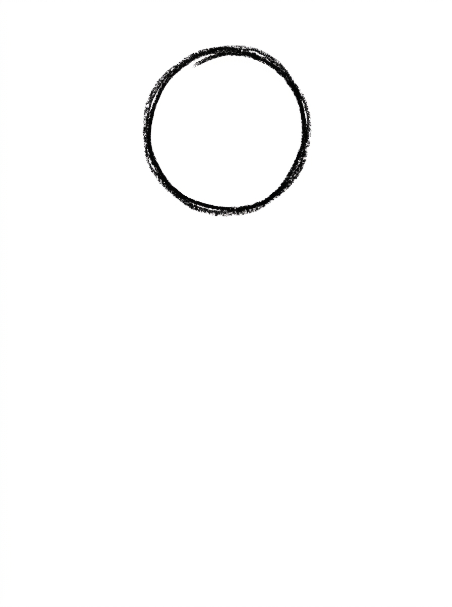
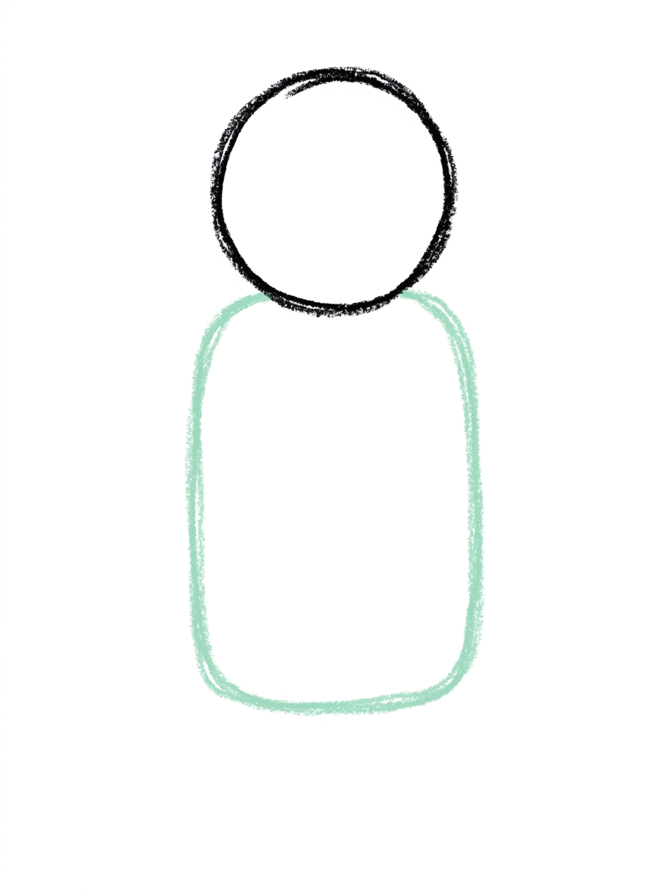
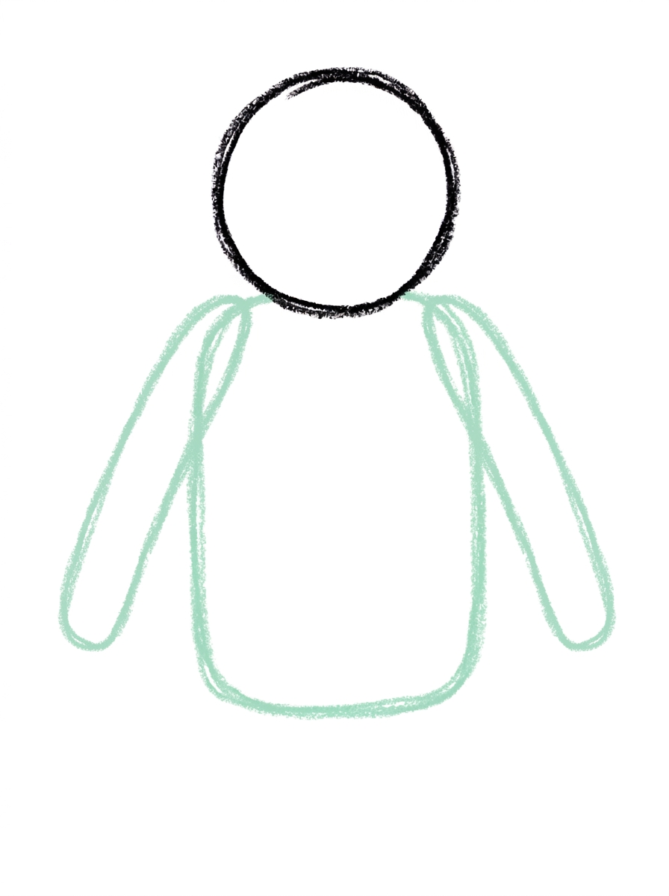
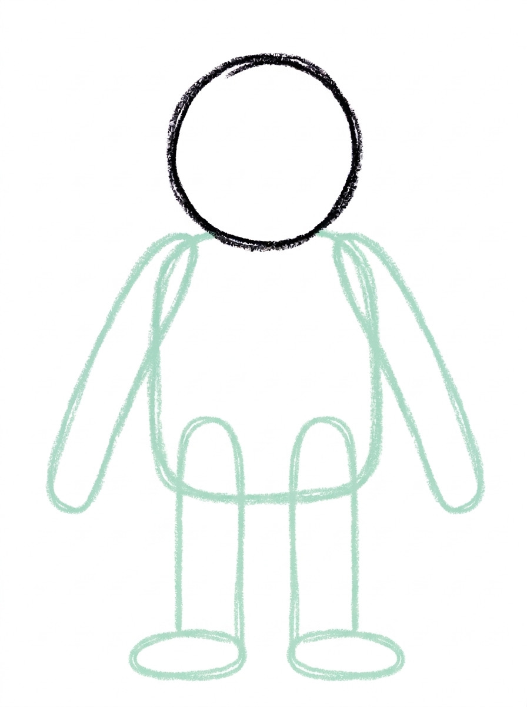
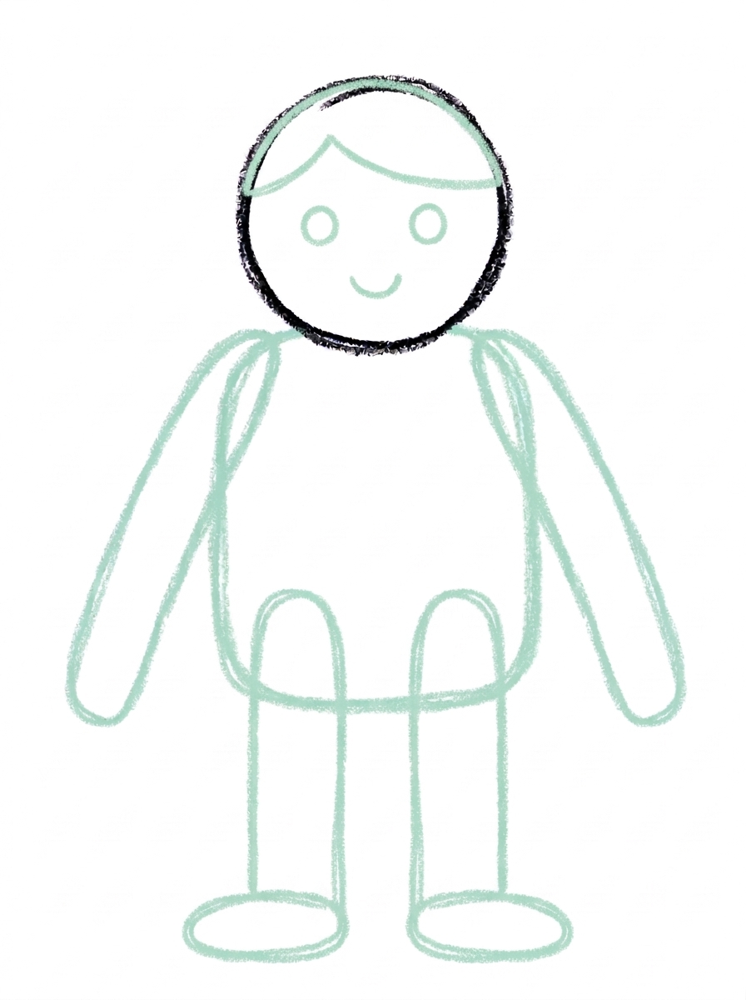
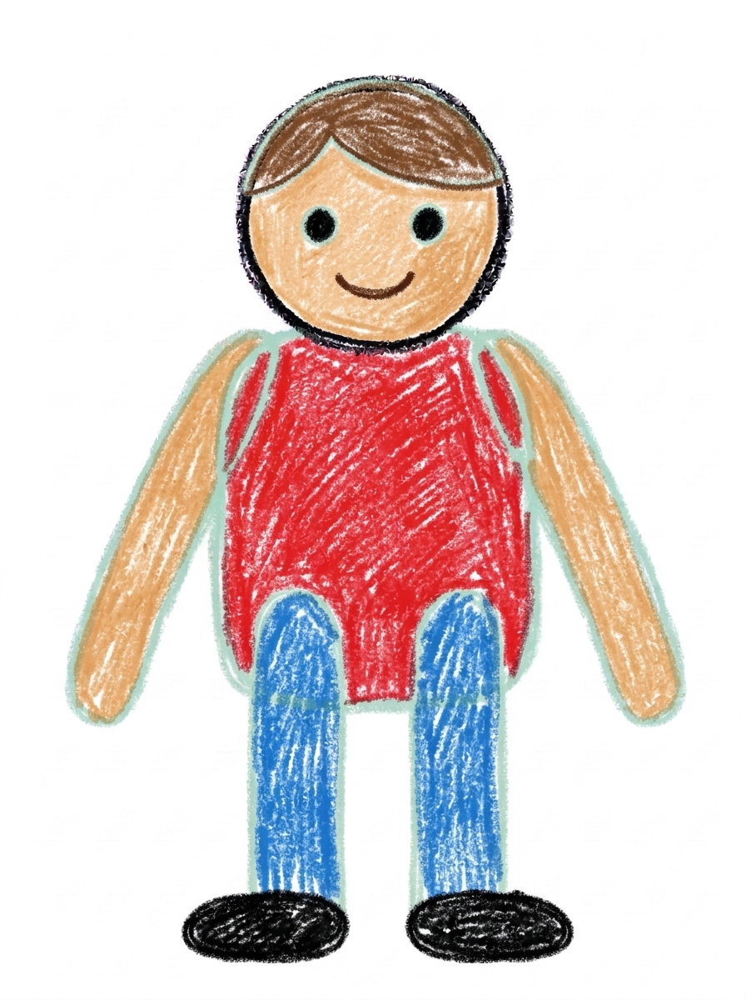

Person Drawing for Kids How to Draw A Person in 6 Easy Steps
Quick Answer
Draw a person in six easy steps: start with one circle head, add a rounded-corner body under it, add a tube arm on each side and two long legs with oval feet, draw a hair line, dot eyes and a smile, then color it in. Made for ages 3 and up — no signup needed, just print and draw.
At a Glance
- Subject: How to draw a person
- Ages: 3+
- Steps: 6 steps
- Time: ~15 min
- Difficulty: Easy
- Supplies: Paper, crayons
Drawing a person is usually the first thing a child wants to learn, and this tutorial builds one the snowman way: a circle head stacked on a body, with arms and legs that attach where they should. Big head, friendly smile, bright shirt — it is a person any kid can finish and recognize.
✏️ Draw Your Person in 6 Easy Steps
One step per box — this step by step person drawing shows each new part in a different color so kids can see exactly what changed.
Step 1: The Head

Draw one circle. This is your person's head.
Step 2: The Body

Draw one shape with rounded corners below the head, so the head sits on top of it like a snowman's head. This is the body.
Step 3: The Arms

Draw two arm shapes, one on each side of the body — each arm a long rounded tube angled slightly downward, starting from the body's side below the head.
Step 4: The Legs

Draw two legs below the body, each one a straight rounded tube. At the bottom of each leg, draw one flat oval for the foot.
Step 5: The Hair and Face

Draw one curved line across the top inside of the head circle — this is the hair line. Below it, draw two round dot eyes and one small curved smile.
Step 6: Color It In

Color your person! Brown for the hair above the curved line, warm skin tan for the face and arms, bright red for the shirt body, blue for the pants legs, black for the shoes and eyes, and dark brown for the mouth. Great drawing!
📊 Person Drawing by Age
Every age can join in — just adjust the job.
| Age | What they can do | Tip |
|---|---|---|
| 3-4 | Draw the head circle and the body shape, and color the shirt and pants. | Draw the head high on the page — the body, legs, and feet all need the space underneath it. |
| 4-5 | Add the arms, legs with oval feet, and the dot eyes with a smile. | Arms start from the body's sides, below the head — pointing that out once prevents the classic arms-from-the-head drawing. |
| 6+ | Complete all six steps solo and start changing the hair and outfit colors to make different people. | Ask who the person is — naming them makes kids care about the details. |
🖨️ Download Your Free Person Drawing Printable
The printable lays out all 6 steps one per box, big enough for little hands — kids draw right alongside each step.
⬇️ Open Free Printable 🖨️ Print🎁 Free printable for ages 3+
🧍 Draw Your Whole Family
Once one person is standing on the page, line up the whole family next to them. Repeat the same six steps at different heights — tall grown-ups, medium kids, one tiny toddler — and change just the hair and shirt color for each one so everyone is recognizable. Add your family pet as a small circle-head friend beside the group, and sign the portrait at the bottom.
What You'll Need to Draw A Person
All you need is a pencil, an eraser, and the printed tutorial page. For coloring, the example uses brown for hair, a warm skin tan for the face and arms, bright red for the shirt, blue for the pants, and black for the shoes — but encourage your child to match their own family's hair, skin, and favorite outfit colors instead.
What They're Learning
This tutorial practices the basic construction of the human figure: a circle head stacked on a rounded-corner body, tube shapes for arms and legs, and ovals for feet. Kids learn where parts attach — arms to the body, legs below it, face inside the head — and the hair line introduces the idea of dividing one shape into two areas with a single curved line.
Make It Yours
Change the hair line to make different people: a zigzag for spiky hair, two circles on top for buns, or a flat line for a cap. The same figure becomes a superhero with a triangle cape behind the body, a dancer with the arms raised, or a soccer player with a circle ball at one foot. Coloring the shirt in team colors or a favorite pattern makes each version personal.
🛒 Our Favorite Drawing Supplies
These are the supplies we reach for in our own home — washable (because kids), quality paper, and enough colors to avoid fights.
As an Amazon Associate, MomYouNeedThis earns from qualifying purchases — at no extra cost to you.
💡 Person Drawing Tips for Parents
Placement is everything in step one: the head circle must start high, in the top third of the page, with lots of empty space below it. A head drawn in the middle leaves no room for long legs, and the figure ends up squished at the bottom. If your child starts low, it is worth erasing and moving the head up before anything else is added.
Watch where the arms attach in step three. Arms that start from the body's sides, below the head, are what make this figure read as a proper person instead of a snowman with sticks. If an arm sneaks up beside the head, a quick erase and re-draw lower down fixes the whole drawing's look.
🧍 Drawing People in the Real World
Drawing a person is the drawing kids ask for most and fear most — everyone wants their people to look right. Here is the secret artists know: every human body, of every age and size, is built from the same stack of simple parts. Heads, a trunk, arms, and legs, arranged a thousand ways. The figure in this tutorial is the starter model — once it stands, clothing, hair, and faces turn it into absolutely anybody.
Real bodies are also delightfully unmatched: arms swing, heads tilt, nobody stands like a ruler. Mention that when the coloring starts — the perfectly straight person is a beginning, and the wobbly one with a wave is usually the drawing everyone loves most.
✋ Warm-Up: Stick Figures with Jobs
Warm up by giving stick figures jobs. Draw a quick stick person running, one jumping, one waving, one carrying something heavy. Thirty seconds each, no erasing — the point is that arms and legs in different positions tell a story instantly. That is the exact skill the standing figure in the tutorial is about to formalize.
Hair practice is the reward: zigzags, swirls, two buns, a cap line — five hairstyles on five scrap heads. When the tutorial's hair step arrives, your child will already have a menu of choices instead of a blank moment.
📖 Give Your Person a Story
A person drawing is a portrait, and a portrait needs a subject. Who is this — the artist themselves, a best friend, an invented superhero between missions? Name, age, and one true fact, dictated and written under the drawing. Portraits with names and facts get kept; anonymous figures get recycled.
The skeleton tutorial is this same person, X-ray style: bones where the body was. Drawing the inside after the outside is the funniest science lesson on the site, and kids who do both start explaining anatomy at dinner. Give your person a sport from how to draw a hockey stick and a bedtime from how to draw a bed.
❓ Person Drawing FAQs
What is the easiest way to draw a person for kids?
Stack the figure like a snowman: one circle head high on the page, a rounded-corner body under it, a tube arm on each side of the body, two legs with oval feet, then a hair line, dot eyes, and a smile.
What age is this person drawing for?
It is made for ages 3 and up. Younger kids can do the head, body, and coloring, while older kids can manage the arms, legs, and face on their own.
What supplies do we need?
Just a pencil, an eraser, and crayons or markers in hair, skin, and clothing colors your child chooses.
Is the printable really free?
Yes — every printable on MomYouNeedThis is 100% free to download and print. No signup, no payment, just tap the download button.
How do I print the person tutorial?
Print at 100% scale, not 'fit to page', so the step pictures stay their true size. Regular letter paper works perfectly.
Why does the head need to start at the top of the page?
The body, long legs, and feet all stack underneath the head. Starting the circle in the top third leaves room for everything; a head in the middle of the page leaves the legs squished.
Why do the arms start from the body and not the head?
Arms attach to the body on a real person. Drawing them from the body's sides, below the head, is what makes the figure read as a person instead of a head with sticks.
Can my child draw themselves or our family?
Yes — that is the best use of this tutorial. Keep the same six steps and change the hair style, hair color, skin tone, and shirt color for each family member.
📚 Keep Exploring
- ✏️ All 76 Drawing Tutorials 76 free step-by-step drawing tutorials for kids.
- 🎀 Cute Coloring Free cute coloring pages for kids.
- ✏️ Drawing Practice Free printable drawing pre-writing worksheet for toddlers.